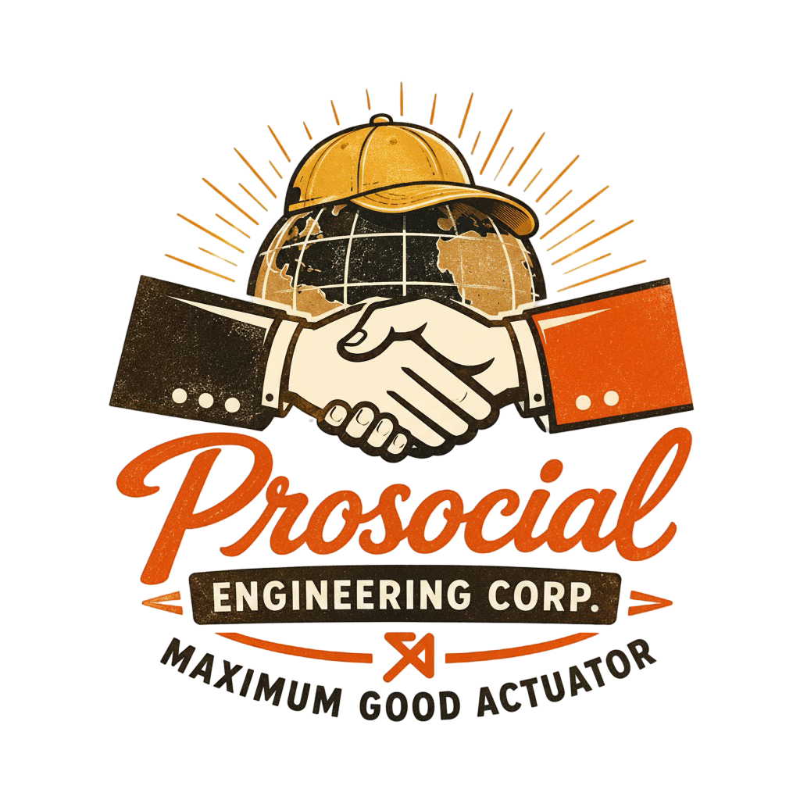

A gain-of-function research & deployment memetic hackathon.
The weekend of September 4–6, 2026
It's called “THE LAST PSYOP” because once you play this game — creating a psyop yourself, seeing what it's like from the other side — you begin to see what % of the information you're exposed to is organic vs engineered.
You leave with the knowledge, and a toolkit, to spread it to your people back home. To raise the epistemic waterline and create enclaves of clean information environments.
Many are already lighthouses in this effort — Taylor Lorenz, Etymology Nerd, Nosilverv, and Hank Green. May the best final psyop win.

Made with ❤️